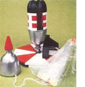
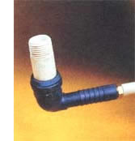

Mom's Two-Liter Bottle Rocket
A plastic bottle, pump and compressed air make fun, cheap toy for children.
July/August 1983
If you're looking for a way to perk up a pack of children afflicted with the midsummer blahs, our backyard space shuttle may be just the answer. Using nothing more than water and compressed air for propulsion, the rocket will shoot well over 100 feet into the air . . . separate its first stage from its nose cone . . . and deploy a parachute to lower the cargo safely back to earth. A typical launch is thrilling enough to catch the full attention of everyone around (including folks who can only claim to be young at heart).
Putting together your own Cape Canaveral shot shouldn't take more than an hour or two of tinkering with parts that, in the main, can be recycled. The basis of the rocket is a pair of two-liter plastic soda bottles . . . one to serve as the propulsion stage and one to form the nose cone. These and many of the other pieces needed to assemble this toy are common to the garden sprayer that was detailed on this same page in MOTHER NO. 80. (In fact, the thought of what might happen if one of that sprayer's bottles broke loose from its mounts is actually what inspired this latest use for the stout plastic containers.)
The rocket's first stage contains all the pressure, and it requires no more preparation than a bit of decoration. As you're adorning the bottle, be sure to leave a clear stripe up the side of the container so you can see whether or not the appropriate amount of H20 "fuel" has been added. The nose cone consists of the snout-and-cone portion of the second bottle, which is cut off at the ridge where the funnel joins the cylinder. We spruced up our "orbiter" a bit by sticking a cone-shaped piece of foam rubber over the neck and by adding a parachute made from eight 18" lengths of string and a 2"-diameter circle of thin plastic (dry cleaners' or light garbage bags work fine for this).
We used an octagonal piece of 1/2" plywood a foot across to form the launching pad (the particular material you use for the base isn't important . . . a piece of 1 X 12 would work as well). The "blockhouse", though, needs to be substantial to prevent energetic youngsters from ripping the assembly apart when they jerk the release cord. We built ours from a 6" section of 2 X 4, with a perpendicular brace made from a 4" piece of the same material. These blocks were then securely fastened to the pad with No. 8 X 1-1/2" wood screws. In the same operation, we also attached legs, which consisted of three 6" lengths of I"-square stock, to the underside of the base by screwing their long dimension even with the outside of the plywood. As a final security measure, we drilled a 3/8" hole near the edge of the pad opposite the blockhouse . . . so the "launchers" could drive a gutter spike into the ground to prevent the assembly from moving.
The trigger mechanism was made by bending a 10" length of 1/8" welding rod into a "U" shape, the width of which was equal to the outside diameter of the soda bottle's neck (about an inch). The two arms of the "U" passed through the 2 X 4 X 6" block at a height that allowed them to fit snugly above the flange on the jug's neck when the rocket
This easy project will thrill young and old alike . . . and recycle trash at the same time! was in launch position. (The exact location for these holes should be determined after the rest of the assembly is complete.)
We chose 1/2" Schedule 40 PVC pipe as the launching post, since that material happened to slide tightly into the neck of our first stage. We threaded a 2" nipple of the pipe into a 1/2" ABS female pipe-to-barb 90° elbow . . . bored a 1-1/8" hole in the center of the plywood base . . . slipped the PVC end of the assembly up through the hole . . . and attached the elbow to the underside of the pad with two 1/2" copper pipe clamps. A little bit of plumber's grease and a garden hose washer formed such a tight seal between the bottleneck and the 1/2" pipe that we were able to pump air into the rocket to a pressure of 50 pounds per square inch without any leakage.
To deliver that much pressure from a safe distance-and make no mistake, this rocket is powerful!-we threaded the inside of the ABS hose barb with a 3/8" pipe tap, twisted in a 3/8" brass hose barb, and connected 12 feet of 3/8" plastic tubing (you might use a hose clamp to hold the line on really tight). At the tubing's other end, we clamped in a regular automotive tire valve (Schrader type) to allow a standard bicycle pump to be connected easily. The trigger mechanism was also extended out 12 feet with a piece of cord that has a dowel handle.
Once you've assembled your own soda bottle shuttle, you'll be ready to begin a backyard space mission. Prelaunch procedure consists of filling the first stage with water to a point about three-fifths of the way up . . . slipping this "booster" down over the PVC nozzle (while spilling as little fuel as possible) . . . holding the rocket fast by sliding the trigger arms over the neck . . . and setting the nose cone lightly atop the first stage. Finally, firing the missile-after a suspenseful countdown, of course-is a two-person job. Indeed, with one youngster pumping and another handling the release cord, something a shade short of NASA-style teamwork is needed for a successful mission.
Be sure to stand back when you reach "T minus zero"! The bottle rocket packs a considerable amount of power . . . and sprays roughly a liter of water about as it lifts off!
EDITOR'S NOTE: If you'd rather build a "milder" flying toy, see page 123. 4
|
 STAFF PHOTOS |
 STAFF PHOTOS |
 STAFF PHOTOS |